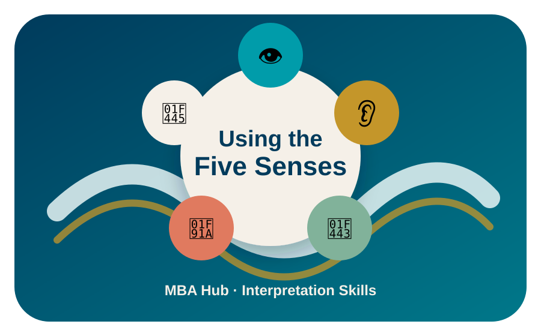

MBA Hub · Interpretation Skills
Engage all senses to make exhibits accessible and memorable for every guest.
v1.1 · Rebuilt from original MBA source · 2026-06-28

While many exhibits rely on sight, interpreters can deepen engagement by using clear verbal descriptions and involving touch, sound, smell, and occasionally taste. Multisensory interpretation benefits all visitors — not only guests who are visually impaired.